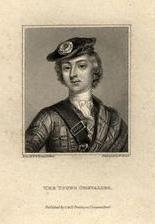
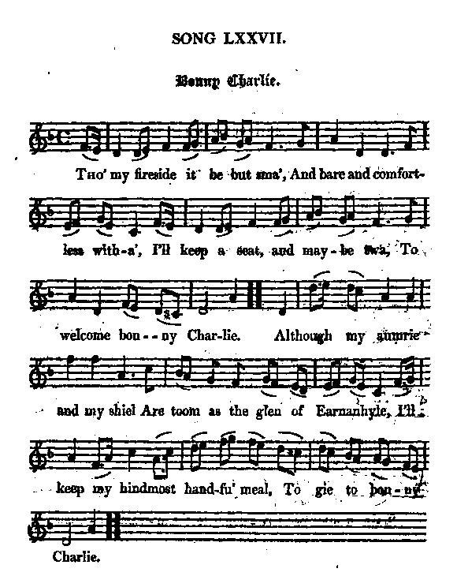

Bonny Charlie
Lyrics attributed by James Hogg to Captain Stewart of Invernahoyle
Tune - Mélodie"Bonny Charlie" also known as "King of Fairies"
from Hogg's "Jacobite Relics" -2nd Series N°77
Sequenced by Christian Souchon
|
To the Tune The tune "Bonny Charlie", is also known as "King of Fairies" (or Irish "Ri na Sideog"), "King William of Orange" and "Your old wig is the love of my heart". Bonny Charlie (sound background to this page). "It is a beautiful and highly popular song and air. It seems either to have been made by or in the name of Captain Stewart of Invernahoyle. I took these verses from the singing of my friend, Mr James Scott, but I heard a girl term the glen "Inverneil". The air bears the same name with the song." Source "Jacobite Relics", 2nd Series, 1821". Variant 1 published in James Aird's 'Selection of Scots, English, Irish and Foreign Airs, Vol II' in 1782 Variant 2 Irish Long Dance derived from the Jacobite tune. Published by James Aird 1783. Variant 3 Scottish Measure credited to Niel Gow (1727-1807) Published in Gow's 'Complete Repository Part 3' in 1806 Source "The Fiddler's Companion" (cf. Links). (This song may be paralleled with Come awa, Charlie"). Melodies sequenced by Ch.Souchon |
  |
A propos de la mélodie La mélodie "Bonny Charlie" porte aussi les titres suivants: "Roi des Fées" (ou "Ri na Sideog", en irlandais), "le Roi Guillaume d'Orange" et "Votre perruque a conquis mon coeur". Bonny Charlie (fond sonore de la présentepage). "Voila un chant et un air aussi beaux que populaires. Il semble qu'on les doive à la plume ou à l'initiative du capitaine Stewart d'Invernahoyle. C'est mon ami M. James Scott qui me l'a chanté, mais j'ai entendu une jeune fille nommer le glen "Inverneil". L'air a le même titre que le chant. Source "Jacobite Relics", 2ème Série, 1821". Variante 1 publiée dans James Aird's 'Selection of Scots, English, Irish and Foreign Airs, Vol II' in 1782. Variante 2 "Irish Long Dance" derivée du morceau Jacobite. Publiée par James Aird, 1783. Variante 3 "Scottish Measure" attribuée à Niel Gow (1727-1807) Publiée dans le "Complete Repository", tome 3 de Gow en 1806 Source "The Fiddler's Companion" (cf. liens). (On peut rapprocher ce chant de Come awa, Charlie"). Melodies sequenced by Ch.Souchon |